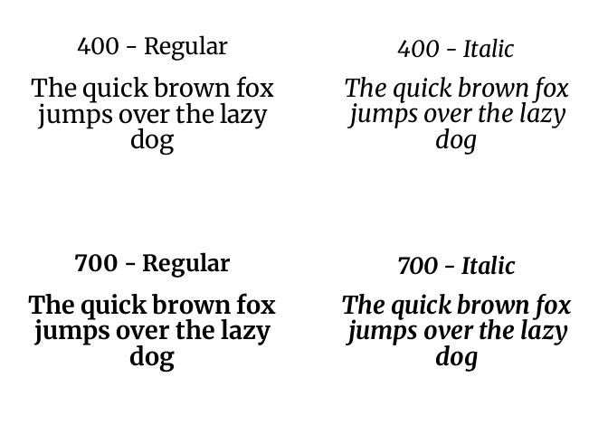

Download and register fonts from GDPR-compliant providers for use in R graphics. Currently supports Bunny Fonts, a privacy-first alternative to Google Fonts.
Features
- 🔒 GDPR-compliant: Uses Bunny Fonts (no tracking, no data collection)
- 📦 Simple API: One function to download and register fonts
- 💾 Smart caching: Downloads once, reuses forever
- 🎨 Full variants: Regular, bold, italic, and bold-italic support
Installation
# From r-universe
install.packages("AddFonts", repos = "https://gnoblet.r-universe.dev")Quick Start
Add Fonts With One Core Function
To add a font to R, simply call add_font() with the font family name retrieved from the Bunny Fonts website. For example, to add the “Oswald” font:
Preview Fonts
The preview_font() function plots all downloaded and registered variants of a font family in one go. Once you have picked a font, for instance “Merriweather”, calling the preview_font() function will show you all its variants, and “Merriweather” has 4: regular, bold, italic, and bold-italic.
library(AddFonts)
preview_font("merriweather", regular.wt = 400, bold.wt = 700)
Add Fonts And Use With ggplot2
Let’s imagine we want to use several fonts in a simple plot. First, we loop over a vector of font family names and call add_font() for each one to download and register them with R.
library(AddFonts)
library(showtext)
library(ggplot2)
fonts <- c(
"oswald",
"blaka-ink",
"barrio",
"major-mono-display",
"merriweather",
"montserrat",
"sixtyfour",
"playfair-display",
"inter",
"aboreto",
"aclonica",
"akronim",
"babylonica"
)
for (font in fonts) {
add_font(font)
}Now that fonts have been registered, we can use them in a ggplot for instance.
showtext_auto()
font_data <- data.frame(
x = 0.5,
y = seq(0.95, 0.1, length.out = length(fonts)),
label = paste(tools::toTitleCase(gsub("-", " ", fonts)), "Font"),
family = fonts,
size = c(9, 8, 8, 6, 8, 8, 7, 8, 8, 8, 8, 8, 9)
)
ggplot(
font_data,
aes(x = x, y = y, label = label, family = family, size = size)
) +
geom_text(hjust = 0.5) +
scale_size_identity() +
xlim(0, 1) +
ylim(0, 1) +
theme_void()
Cache Management
# Get cache location
get_cache_dir()
# Clear specific fonts
cache_clean(families = c("roboto", "open-sans"))
# Clear all fonts
cache_clean(reset = TRUE)Why Bunny Fonts?
Bunny Fonts is a privacy-focused, GDPR-compliant alternative to Google Fonts:
- 🔒 No tracking or data collection
- 🚀 Fast global CDN
- 🆓 Free and open-source
- 🎨 Includes most popular Google Fonts
Perfect for EU users or anyone prioritizing privacy.
After a period of testing on real world projects using Bunny Fonts as the only-and-default font provider, AddFonts is meant to integrate other providers.
How AddFont Works
- Downloads WOFF2 files from Bunny Fonts CDN
- Converts to TTF format using
woff2_decompress - Caches locally for reuse
- Registers with R via
sysfontspackage
Why convert? Bunny Fonts serves WOFF2 (web-optimized), but R’s sysfonts needs TTF format. Conversion happens once; subsequent uses load instantly from cache.
In the background, S7 classes manage font metadata and caching logic, while sysfonts handles registration with R’s graphics system.